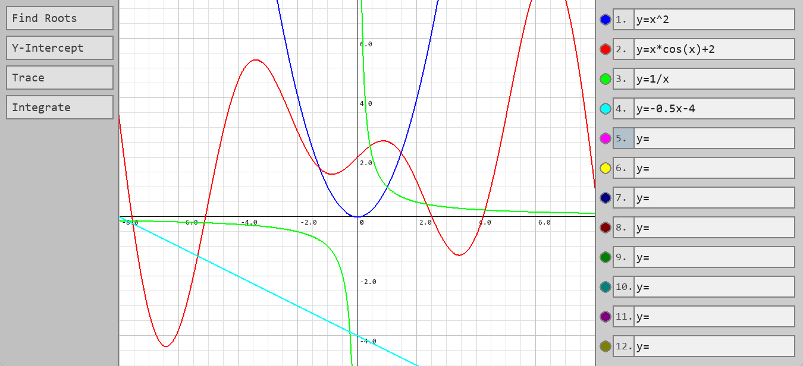
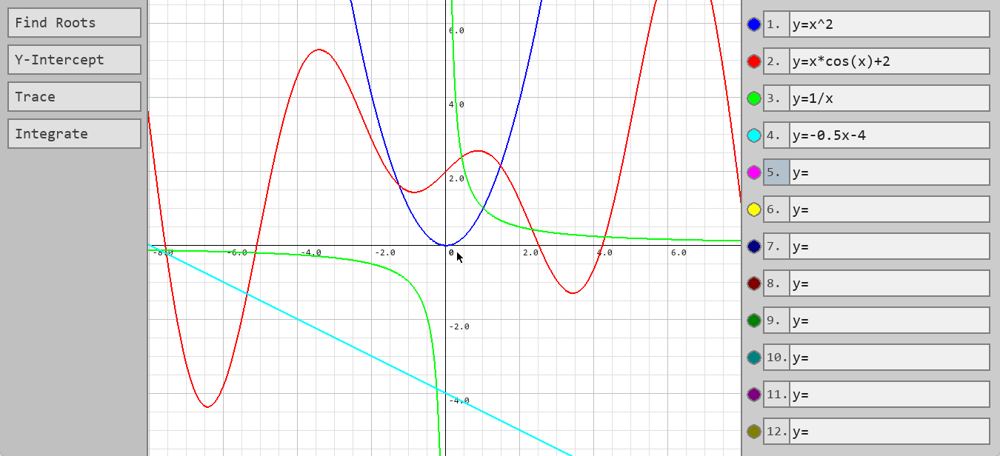

This is a utility that can plot equations of the form \(y=f(x)\), and perform a few basic operations on them.
First the input is converted into a form executable by python using some regex substitutions.
It will then be evaluated for each point on the screen horizontally.
For example, \(y=2x(\sin(x))\) will be converted into 2*x*(math.sin(x))
Then once the function has been evaluated for all points, those which have a value within the view will be connected with lines to render the curve. This approach isn't perfect, and means that non-continuous curves like \(y=\text{floor}(x)\) will have their sections connected. There are also sometimes jagged edges on curved sections, just from how the inbuilt line tool works. For most functions though, it looks quite good.
The view can be dragged around and zoomed out to show different parts of the graph, and doing so will scale the background grid and change the axis labels accordingly. The view also zooms into where the cursor is, which helps to make the application easy to control.
There are then also a few utilities in the menu on the left, which allow you to find the intercepts of the graph, the value at a specific point, and even to get the area under it for a given range.
The intercept functions are quite simple, just finding the point at which the graph crosses the axis. For the y-axis, there will only ever be one intercept due to the restriction on the type of function allowed, and for the x-axis it will tell you the roots only visible on the screen. Trace will just evaluate the function at the point given, and then integrate uses Simpson's method to approximate the area between the two given points.
Here is a code snippet of the function which does the integration.
def integrate(func, a, b, n=10):
"""Find an approximation for the definite integral between a and b
Using Simpson's rule with n equally spaced strips"""
if n % 2 == 1: # Simpson's Rule requires an even number of strips
n += 1
dx = (b - a) / n # Width of each strip
area = 0
# Calculates the y value at each interval between strips and applies Simpson's Rule
for i, y in enumerate([func(a + i * dx) for i in range(n + 1)]):
if i in (0, n):
area += y
elif i % 2 == 1:
area += 4 * y
else:
area += 2 * y
return area * (dx / 3)